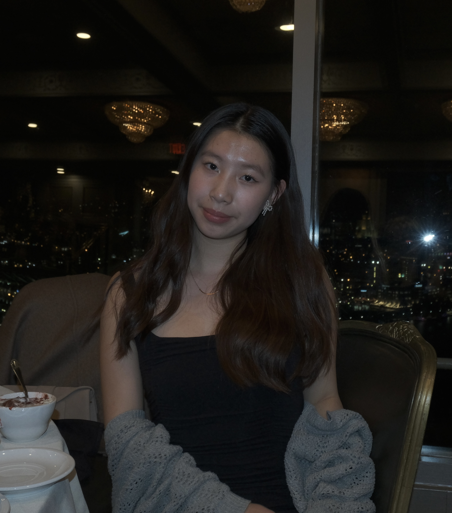

Hi, my name is Cindy
Hi I’m Cindy Wang and welcome to my personal website! I am a current undergraduate freshman at Carnegie Mellon University studying Information Systems, hoping to double major in Artificial Intelligence and minor in Human Computer Interactions. I was born in Beijing, China, but grew up in Cupertino, California. Being in the heart of Silicon Valley, I am passionate and curious about the power of technology to shape human lives and the future. Outside of academics, I enjoy playing volleyball, getting boba, playing cards with my friends, and watching mystery-solving shows. I am an extroverted person that loves to meet new people and take on challenges, such as participating in hackathons and innovating solutions in research. In the future, I hope to explore the intersection of cybersecurity and artificial intelligence, such as using large language models to protect digital privacy and defend against cyber threats. Feel free to reach out because I would love to connect and explore new opportunities with like-minded individuals.